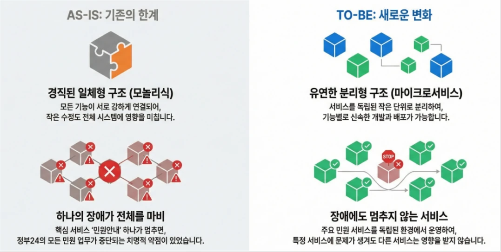
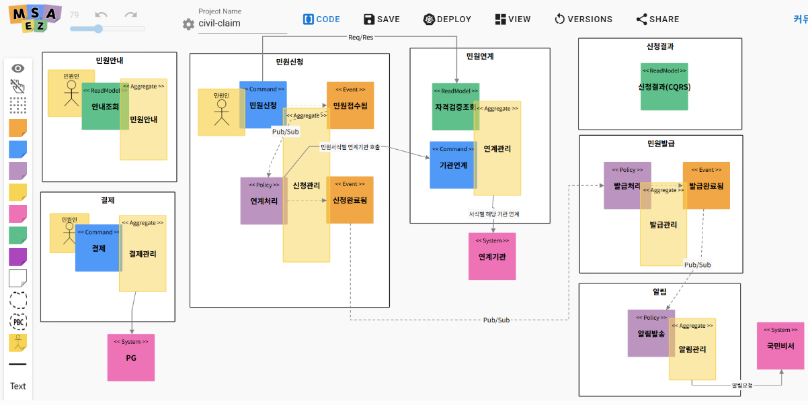

Gov24 Cloud-Native Transformation: Reinventing Public Services with Microservices Architecture
This post walks through the design and analysis process of the first-phase cloud-native transformation of the Gov24 portal, carried out by uEngine Solutions, and explains in technical depth what changed through the adoption of microservices architecture (MSA).
In particular, it compares the limitations of the legacy monolithic civil-service system with the AS-IS vs. TO-BE architecture that overcame them, and presents optimization strategies by service type along with real-world applications of key technical patterns (Saga, event-driven, CQRS, and more).
Our aim is to give developers practical insight into applying MSA on a real production project, and to give general readers context on how government civil services are being transformed.
Background: Public Cloud Migration and the Gov24 Challenge
Under its 'Public-Sector Information Resource Cloud Migration Plan' to move every public system to the cloud by 2030, the Ministry of the Interior and Safety is accelerating digital government innovation.
With the aggressive goal of applying cloud native to more than 70% of new systems by 2026, a large-scale first-phase migration program covering 9 flagship systems across 7 agencies was launched in 2025.
At its center is the Gov24 civil-service portal. As the civil-service portal closest to citizens' daily lives, Gov24 must stay up even under heavy user surges. Through this transformation, the government set out to auto-scale system capacity up to 7.6x, cut service downtime by 81.6%, and shorten processing time by 36.7%. This technical leap will ultimately provide a solid foundation for delivering faster, smoother digital administrative services to citizens.

[Key points of the Gov24 cloud-native transformation]
Analysis of the Gov24 Cloud-Native Transformation
Problems with the legacy system (AS-IS architecture limitations)
Gov24's cloud-native transformation began in earnest on the basis of the Information Strategy Plan (ISP) established in 2024. Tasked with the detailed migration design under this roadmap, uEngine Solutions first performed an in-depth analysis of the existing system and, in the process, uncovered the limitations of its monolithic structure and a critical single point of failure (SPOF).
1. Rigidity caused by tight coupling
The analysis showed that the legacy Gov24 system was either a classic monolithic integrated structure or a tightly coupled set of giant applications. High dependencies between internal modules made maintenance and feature expansion difficult, and the coupling was so tight that a failure or change in one small part propagated immediately across the whole system, severely limiting deployment flexibility.
2. SPOF risk in the 'Service Guide' service
The bigger weakness was a structural single point of failure (SPOF). Because every civil-service application had to start by passing through the 'Service Guide (search/guidance)' module, an outage of that one service would paralyze every civil-service function on Gov24. This was a structural vulnerability in which a single failure could take down the entire citizen-facing service, and resolving it was the top priority of the cloud migration.
In summary, the legacy system's monolithic nature undermined flexibility and high availability, and carried a high risk of local failures spreading system-wide. It also could not respond elastically under critical load, raising serious performance concerns. Based on this analysis, uEngine Solutions established an architecture strategy to reduce coupling and secure stability through service separation and redesign.
Architecture transformation strategy by service type (TO-BE design)
The civil services handled by the Gov24 portal fall into three broad types according to their nature.
Depending on how each service is processed and the level of performance and reliability it requires, we applied different architecture patterns — synchronous vs. asynchronous, event-driven vs. API calls, dedicated domain isolation — to design a flexible, efficient MSA structure tailored to each service's characteristics.
Below we describe the before-and-after architecture and service flows tailored to ① simple-application / instant-issuance services, ② deadline-based / non-integrated services, and ③ critical services.
① Simple-application / instant-issuance services – synchronous REST-based MSA
Simple-application / instant-issuance services are, as the name suggests, services whose result can be issued the moment the application is submitted. Examples include printing a resident registration certificate or the Happy Birth one-stop service — services with no separate approval step that can be processed in real time from a simple application.
For these services, minimizing response time to the user request is the top priority, so the transformed architecture retains a synchronous REST call model to keep the processing flow simple.
In the old structure, the issuance module updated the application DB directly to refresh application status, or handled multiple steps inefficiently within a single process; in the new design, the issuance service calls the application service directly via REST API to update the result. This clarifies the interfaces between services and removes direct integration with another boundary service's data store, lowering coupling.
In other words, internal integration is handled as far as possible through simple function calls or internal API calls, avoiding unnecessary trips through the message broker and reducing performance overhead.
② Deadline-based / non-integrated services – asynchronous Pub/Sub on an event store
Deadline-based services deliver their result within a set period after application — services that cannot be processed instantly and take several days — while non-integrated services are those that do not require real-time integration with other agencies' systems during processing.
What these two types have in common is that reliability and process completeness matter more than instant processing, and that delayed processing on the back end is common. The transformed architecture therefore designs them as an event-driven asynchronous structure.
In the new flow for deadline-based/non-integrated services, the user receives an immediate acknowledgment that the application has been received, and the actual processing then proceeds in the background, driven by events.
Specifically, the application service (asynchronous application MSA) publishes the received application as an event to the event store; the issuance service (asynchronous issuance MSA) then subscribes to that application event, performs the processing, and, once the final output is produced, publishes a completion event in turn. The user later checks the result or is notified of completion through a notification (the Gukmin Biseo national notification service).
The biggest advantage of this Pub/Sub asynchronous pattern is greater system robustness: because the event store functions as a message queue, messages are held rather than lost even if a back-end service fails temporarily. Processing resumes after recovery, guaranteeing continuity of service processing.
Key considerations in moving to the event-store-based structure were transactional consistency and error handling. When chaining multi-step processing through events in a distributed environment, we applied the Saga pattern (a distributed transaction management approach that maintains data consistency across distributed systems) to preserve process consistency. Consumer services implement duplicate-message protection (idempotency), hardening the logic so that processing the same event twice has no side effects.
We also put a retry and DLQ (Dead Letter Queue) mechanism in place: events that fail processing more than a set number of times are routed to a separate error queue for monitoring and compensating action, improving the reliability of asynchronous processing and letting operators track and manage problem cases.
③ Critical services – high-availability structure on independent namespaces
In the Gov24 native transformation, high-importance, high-traffic core services received a separate, independent design. Representative examples are building register issuance and vehicle registration record lookup.
These services have high call volumes and a large impact on the public, so bundling them into the same environment as other services raised concerns about failure propagation and performance degradation. The transformation project therefore designed the architecture so that these critical services run independently in a dedicated execution environment.
The core of the architecture design is the independent namespace strategy. In the Kubernetes-based cloud environment, an isolated namespace (a separate microservice group) is created exclusively for each critical service, and that service's microservices run only within it.
For example, the service guide, application, issuance, and integration microservices for the building register are deployed in their own namespace, separate from other services, and vehicle registration likewise runs in a dedicated namespace. This way, a problem in one critical service does not propagate to other services, and the resource allocation and scaling strategy for that service can be optimized independently. In the actual design, each critical-service namespace applies its own integration channels and microservice replica configuration mapped to that service alone, maximizing high availability (HA).
This also resolved the SPOF problem of the Service Guide service noted earlier, by giving each critical service its own Service Guide channel.
Key Design Patterns Applied in the Cloud-Native Transformation
One of the core goals of a microservices transformation is to reduce coupling between services and clarify boundaries. The Gov24 project was likewise designed to eliminate legacy monolithic elements and maximize each service's autonomy and independence.
In particular, tight coupling caused by direct database references was replaced with loose, event-based coupling, and general services were separated from critical services so that critical services keep running unaffected even when a general service fails.
To raise the technical maturity of the MSA, the project applied a range of design patterns across the architecture. From the Saga pattern for data consistency in distributed transactions, to idempotency and transaction patterns that guarantee reliable event processing, to a CQRS design that optimizes high-volume query performance, we built a dense set of technical safeguards to secure both stability and flexibility.

[EventStorming model for critical services, MSA-Ez]
The choice for data consistency: Choreography Saga
To guarantee data consistency across the distributed process running from application to issuance, the Gov24 native transformation adopted the Saga pattern, and two approaches were evaluated for the design.
- Choreography Saga: Each service exchanges events and autonomously handles the next step. Coupling between services is lower, but tracking the overall flow and handling complex exceptions is harder.
- Orchestration Saga: A central orchestrator controls the process. Monitoring and error control are easier, but load concentrates on the orchestrator and dependencies between services may increase.
To reduce coupling and preserve flexibility, we adopted the Choreography approach for the internal process (application ↔ issuance). External integration segments beyond our control, however, were excluded from the Saga transaction scope to protect overall system stability.
From subscribe to publish: atomic units of work and idempotency
The key to the reliability of the Gov24 system lies in clearly defining the unit in which events are processed. We designed the entire sequence — fetching an event from the event store (Subscribe), executing business logic (Transaction), and publishing the result as a new event (Publish) — as one indivisible atomic unit.
In a distributed network environment, however, messages may be resent or arrive as duplicates during failure recovery. As a safeguard, we built an idempotency scheme from the business perspective.
Specifically, we used database unique constraints or checked the current processing status of the application before executing the logic. In other words, if a duplicate request arrives for an application already marked 'issued', the system detects it and performs no further work.
As a result, we enjoy the reliability of the 'at-least-once' delivery that messaging systems such as Kafka guarantee, while completely eliminating data duplication and preserving data integrity.
Traceable event design and DLQ strategy
The Gov24 project also established principles and strategies for event design. First, we made message naming and structure consistent so that an event's meaning is clear from the event alone.
Every domain event follows a readable naming convention: for example, the “application submitted” event is defined in domain-verb form as ApplicationSubmitted. Where types differ, as with general services versus vehicle registration, a qualifier in the event name (GeneralApplicationSubmitted, CarApplicationSubmitted, etc.) makes them distinguishable at a glance. This domain-based event naming also helps in logs and tracing during operation, making it clear which event originated where.
Message payloads include sufficient metadata — application ID, processing stage, timestamp, source service — to improve traceability. At the same time, we avoided packing large data blobs into events: files and form data are kept in a separate store, and events carry only a reference link, keeping message size under control.
A Dead Letter Queue (DLQ) strategy for errors and exceptions was another important element. When a consumer repeatedly fails while processing a message, that message is quarantined in a separate topic so it does not disrupt the normal flow.
In the Gov24 project, a separate DLQ topic is created for each domain event type: for example, if processing of an ApplicationSubmitted event keeps failing, the message is sent to a predefined error topic such as ApplicationSubmitted.DLQ.
Consumers are configured to publish automatically to the DLQ after a set number of retries (e.g., 3) fail, and a separate consumer reprocesses events accumulated in the DLQ or takes alternative action, performing compensating transactions (rollback in the Saga).
CQRS architecture for high-volume query traffic
For a read-heavy service (querying service results) like the Gov24 portal, the CQRS (Command Query Responsibility Segregation) pattern is essential when building cloud native.
CQRS is an architecture pattern that separates write operations from read operations so each can be processed in an optimized way; it is adopted mainly to improve query performance and scalability. In the Gov24 project, applying CQRS to the application result lookup service was discussed and reflected in the design.
In the legacy Gov24, all data — from application through issuance and lookup — was stored and used in a single integrated DB. In such a single-database structure, heavy read load can affect write transactions, and conversely, bulk inserts or updates can slow down query responses.
To address this, the new architecture proposed a CQRS model that separates a microservice dedicated to application result lookup and, where needed, separates the data store as well. For example, the application/issuance services perform mostly write operations against the operational DB, while the result service runs its queries against a separate read-only DB or cache. This improves query performance while distributing the transactional load on the core system.
Closing: Setting a New Standard for Public Platforms
Gov24's cloud-native transformation goes beyond a simple system migration; it is a meaningful case that improved the fundamentals of public civil services and secured technical flexibility.
In this project, uEngine Solutions clarified service boundaries on the basis of domain-driven design (DDD) and strategically applied MSA best practices such as the Saga pattern and event-store-based asynchronous communication. As a result, the Gov24 portal was able to evolve into a technically more flexible and resilient platform.
Above all, this transformation is significant because it proved that 'microservices architecture (MSA) is the answer for large-scale public services'. Moving past the structural limitation in which a single failure once paralyzed the entire service, service isolation now guarantees continuity of critical operations. The platform also gained a stable foundation that responds flexibly to traffic surges through auto-scaling and distributed processing.